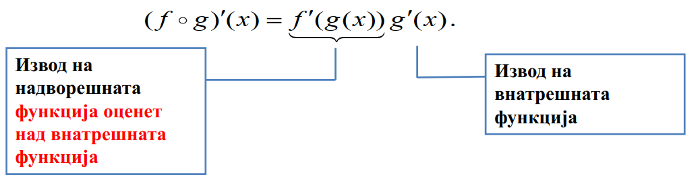

Овде ќе ја изведеме формулата за извод на композиција `f@g` преку изводите на `f` и `g`. Оваа формула ќе ни овозможи диференцирање на сложени функции со помош на познати изводи на поедноставни функции.
Всушност проблемот се состои во тоа, како да ги искористиме изводите на `f` и `g`, за да најдеме извод на композицијата `f@g`.
За решавање на овој проблем ги воведуваме следните зависни променливи
`y(f@g)(x) = f(g(x)` и `g(x)`
од каде што имаме дека `y = f (u)`. Сега, ќе ги користиме изводите:
` dy/du = f'(u)` и `dy/dx = g'(u)`
`dy/dx = d/dx[f(g(x))]`
Сакаме да ги искористиме брзините на промена `dy/du` и `du/dx` за да ја најдеме непознатата брзина на промена `dy/dx`.
Интуицијата сугерира дека брзините на промена се множат.
На пример, ако `y` се менува `4` пати во однос на `u` и `u` cе менува `2` пати во однос на `x`, тогаш `y` cе менува `4 * 2 = 8` пати во однос на `x`.
Ова сугерира дека
` dy/dx = (dy)/(du)*(du)/(dx)`
Оваа идејата е формализирана во следната теорема
Теорема 1
(Верижно правило) Ако `g` е диференцијабилна во `x` и `f` е диференцијабилна во `g(x)`, тогаш композицијата `f@g` е диференцијабилна во `x`. Уште повеќе, ако
`y(x) = f(g(x))` и `u=g(x)`
тогаш `y = f (u)` и
`dy/dx = (dy)/(du)*(du)/(dx)`
Пример 3. Да се најде `dy/dx` ако `y = cos(x3)`.
Решение. Нека `u = x^3`, тогаш `y = cosu`. Со примена на верижното правило добиваме
`dy/dx = (dy)/(du)*(du)/(dx)`
`= d/(du) [cosu] * d/dx [x^3]`
` = -sin(u)*(3x^2)`
` = -sin(x^3)*(3x^2)`
` = -3x^2sinx^3`
Алтернативна верзија на верижното правило
Претходната формула за верижното правило може да биде тешка за примена во некои проблеми кои вклучуваат многу променливи.
Алтернативна верзија на верижното правило е следната:
` = (f@g)^'(x) = f^'(g(x))g(x)^'`
`y(f@g)(x) = f(g(x))` и `u = g(x)`
тогаш `y = f (u)`. Во овој случај,
` dy/dx = (f@g)^'`
`dy/(du) = f^'(u) = f^'(g(x))` и `(du)/dx = g^'(x)`
Ако ги замениме последните изрази во верижното правило, добиваме
`(f@g)^'(x) = (dy)/(dx) = (dy)/(du) * (du)/(dx) = f^'(g(x))g^'(x)`
`(f@g)^'(x) = f^'(g(x))g^'(x)`
Еден начин да се запомни оваа формула е да ја наречеме `f` „надворешна функција“, а `g` „внатрешна функција“ во композицијата `f (g(x)) и да го изразиме верижното правило со зборови на следниот начин:
Изводот на `f(g(x))` е изводот на надворешната функција оценет (пресметан) во внатрешната функција помножен со изводот на внатрешната функција.
Пример 4. Да се најде `ℎ^'(x)` ако `h(x) = cos(x3)`.
Решение. Функцијата h може да се разгледува како композиција `f(g(x))` каде `g(x) = x^3` е внатрешната функција, а `f(x) = cosx` е надворешната функција. Со користење на верижното правило, добиваме:
`= f^'(x^3)3x^2 = (-sinx^3)(3x^2) = -3x^2sinx^3`
Пример 5. Да се најде `ℎ^'(x)` ако `h(x) = tan^2x`.
Решение. Функцијата h може да се разгледува како композиција `f(g(x))` каде `g(x) = x^3` е внатрешната функција, а `f(x) = cosx` е надворешната функција. Со користење на верижното правило, добиваме:
`= f^'(x^3)3x^2 = (-sinx^3)(3x^2) = -3x^2sinx^3`
`= (tan^2x)^' = ((tanx)^2)^' = (2tanx)(1/cos^2x) = 2tanx/cos^2x`
Генерализирана формула за извод
Ќе дадеме уште една корисна формула за верижното правило.
Ако воведеме замена `u = g (x)` во
`(f@g)^'(x) = f^'(g(x))g^'(x)`
тогаш може да ја презапишеме формулата како
`d/dx[f(u)] = f^'(u)(du)/(dx)`
Овој резултат се нарекува генерализирана формула за извод на `f` , и дава можност за користење на изводот на `f (x)` за определување на изводот на `f (u)`, каде што `u` е функција од `x`.
>